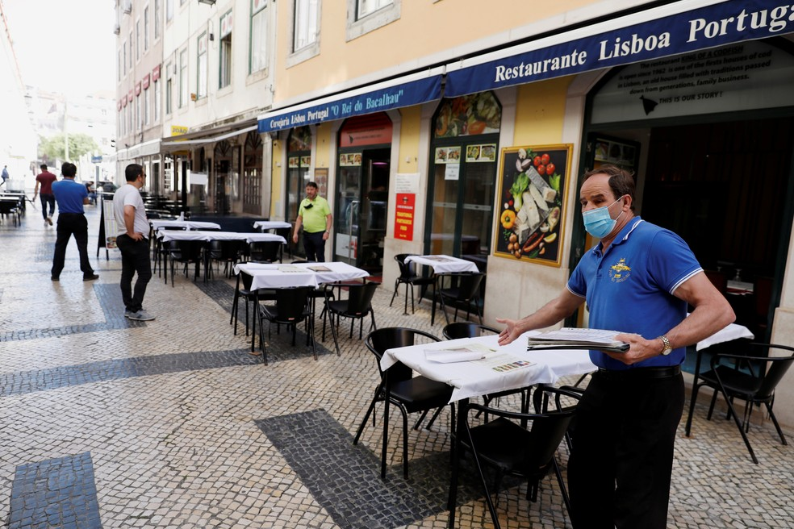
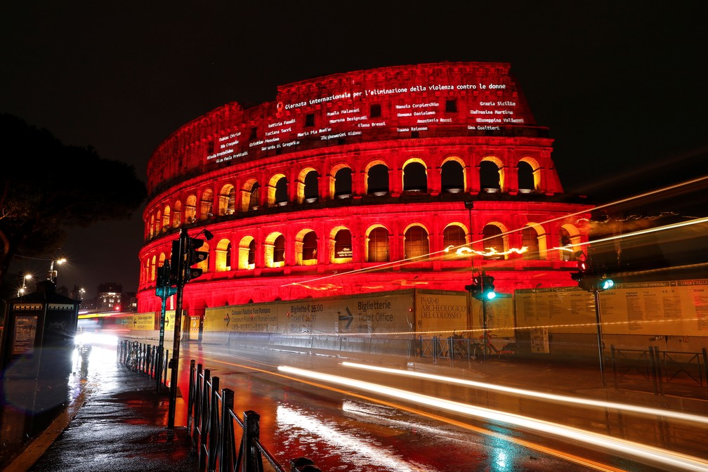

Notícias cidade
Destaque
NOVA VARIANTE DETECTADA NO REUNIDO UNIDO!!
Reino Unido impõe testagem e isolamento para todos os viajantes devido à variante ômicron
Leia mais!NOTÍCIAS INTERNACIONAIS
-
COREIA DO SUL TESTA ROBÔS EM ESCOLAS!
O “Alpha Mini” tem apenas 24,5 centímetros de altura e pode dançar, liderar canções longas, recitar histórias e até mesmo ensinar movimentos de kung fu enquanto as crianças imitam suas flexões e equilíbrios com uma perna.
-

PORTUGAL VOLTA A EXIGIR MÁSCARAS E RECOMENDA TRABALHO REMOTO
A partir de 1º de dezembro, as máscaras voltarão a ser obrigatórias em ambientes fechados, o passaporte sanitário será exigido em restaurantes e hotéis e o governo recomenda o trabalho remoto.
-

ESPANHA RESTRINGE VOOS DE PAíSES DA AFRICA POR MEDO DE NOVA VARIANTE!!
A Espanha decidiu nesta sexta-feira barrar voos vindos da África do Sul e de Botsuana, países onde uma nova variante preocupante do coronavírus foi detectada nas últimas semanas. A medida foi anunciada pela ministra da Saúde, Carolina Darias.
-

CHEGA DE VIOLÊNCIA NAS MULHERES!!
Manifestantes pedem fim à violência contra a mulher em protestos pelo mundo; Coliseu é iluminado em vermelho. Manifestantes foram às ruas em várias do mundo nesta quinta-feira (25), Dia Internacional pela Eliminação da Violência Contra as Mulheres. Além dos atos, monumentos como o Coliseu de Roma foram iluminados com a cor vermelha.